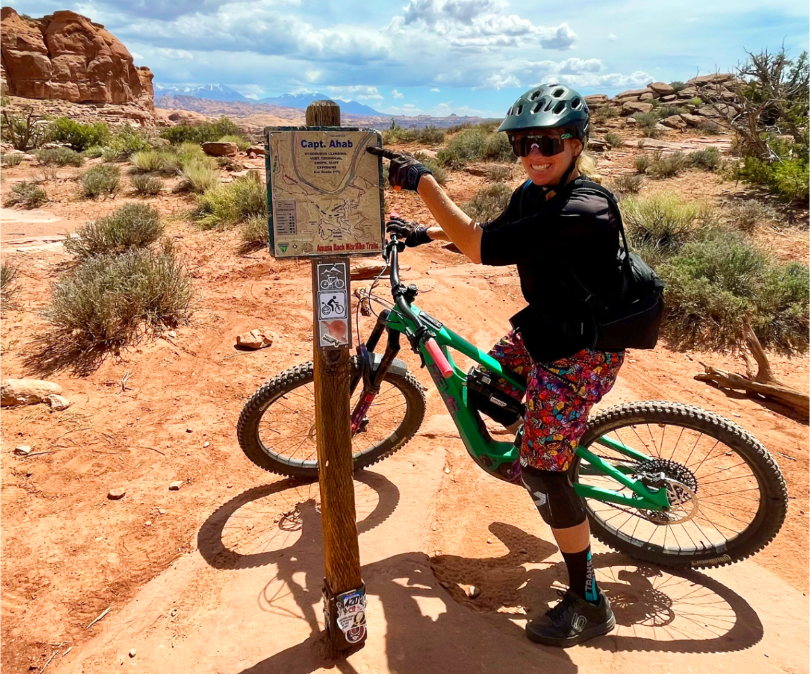
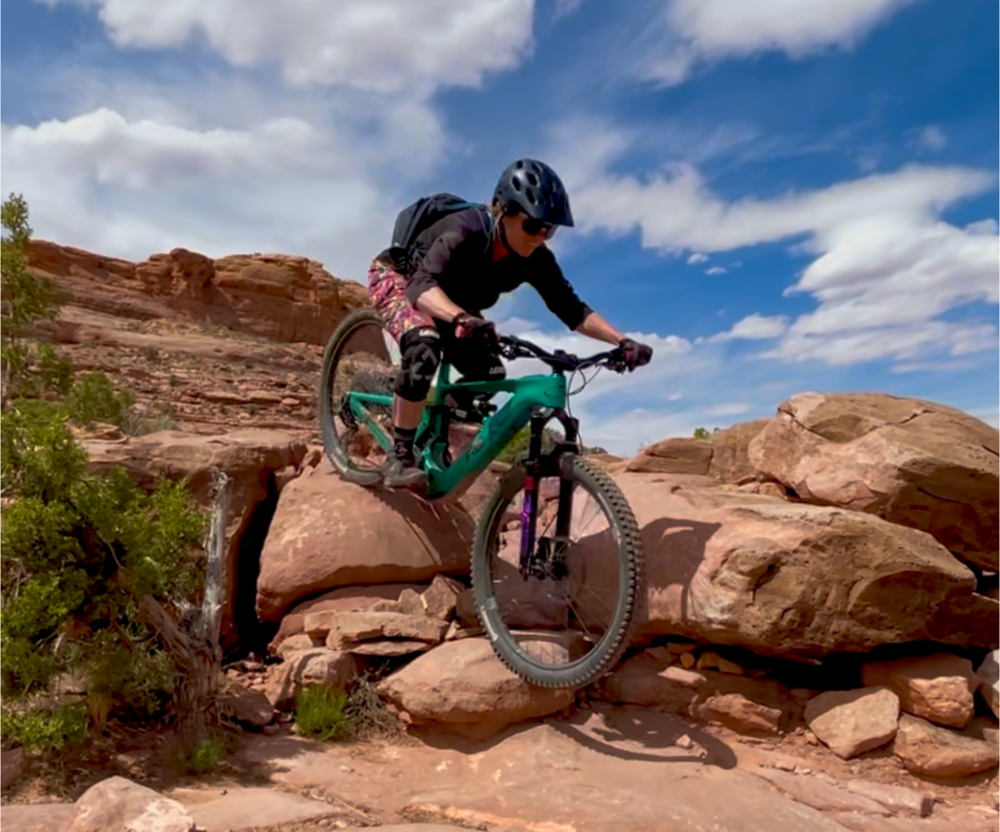
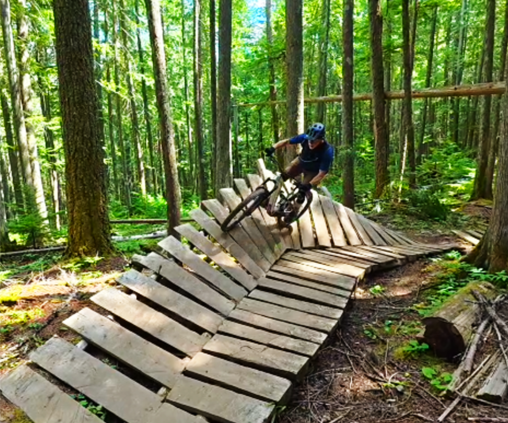
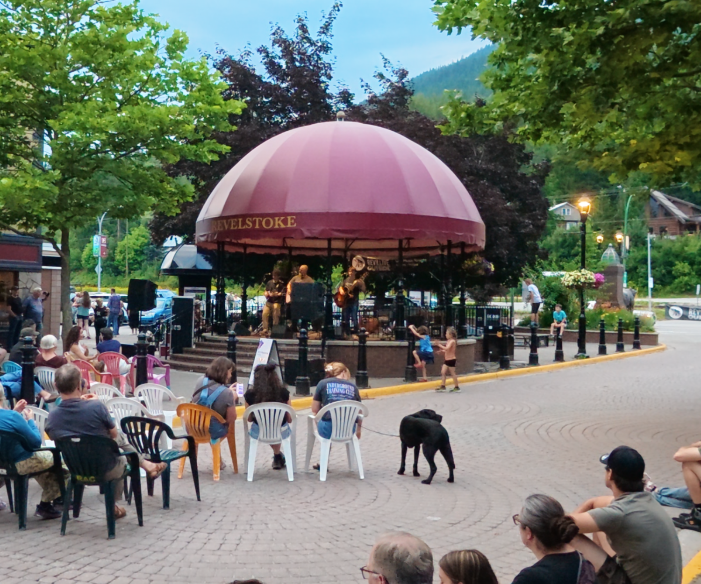

⌖
Identify Riding Areas
Show riders where to go and what to expect.
Turn “I've heard of your destination”
into “We need to ride there.”
If your destination video doesn't name the trails, show what they're actually like to ride, and explain what makes your riding different, it isn't doing its job.
A few unnamed trail clips and generic scenic drone shots could be anywhere — and “anywhere” doesn't get chosen.

Show riders where to go and what to expect.

Highlight the must-ride trails and experiences.

Make the landscape and trail variety come alive.

Bring the local culture, people and places to life.
Full-length 16:9 destination video telling the complete story of your destination.
Shorter edits designed for websites, campaigns and digital promotion across channels.
Purpose-shot short-form content built for social, including vertical footage where it makes sense.
Together for 20 years, we've spent 19 of them leading, teaching and living the outdoors.
Worked directly with bike park managers to generate tourism.
We know what riders need to see before choosing a destination.
Kelly manages a 42,000+ member MTB community.
Ask about reduced or waived travel costs for projects in areas we're already visiting.